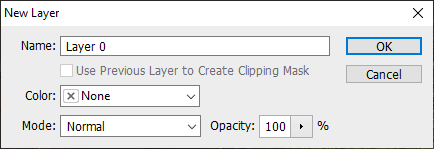

Tutorial Menghilangkan Object yang Tidak Diinginkan dengan Photoshop CS6
by Bagas Rizki Aji WIjaya
Halo teman-teman semua, terimakasih telah berkunjung di website kami. Pada artikel kali ini kami menuliskan tutorial untuk menghapus atau menghilangkan object yang tidak diinginkan pada foto/gambar.
Di sini yang akan kami gunakan sebagai contoh adalah menghilangkan kucing pada gambar di bawah.
Alat dan bahan :
- Laptop/PC
- Software Photoshop CS6
- Foto/gambar
Langkah-langkah :
- Pertama, buka software Photoshop CS6.
- Selanjutnya tekan "Ctrl + O" untuk membuka foto/gambar yang ingin diedit. Pilih foto/gambar yang ingin diedit, lalu klik Buka.
- Double klik layer Background pada tab layer sebelah kanan.
- Jika muncul dialog seperti di bawah, klik OK.
 - Selanjutnya, seleksi object yang ingin dihilangkan, di sini kita memakai Rectangular Marquee Tool.


- Apabila sudah diseleksi, hapus bagian tersebut dengan menekan tombol "Backspace".

- Selanjutnya, klik kanan pada bagian tersebut, dan akan muncul dialog seperti di bawah. Pilih Fill...

- Lalu akan muncul dialog seperti di bawah, Klik OK.
- Kita lihat perbedaannya.
Before
After